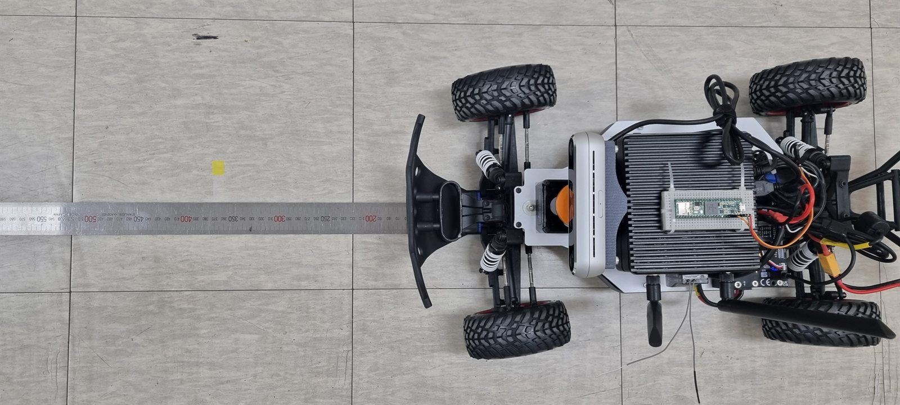
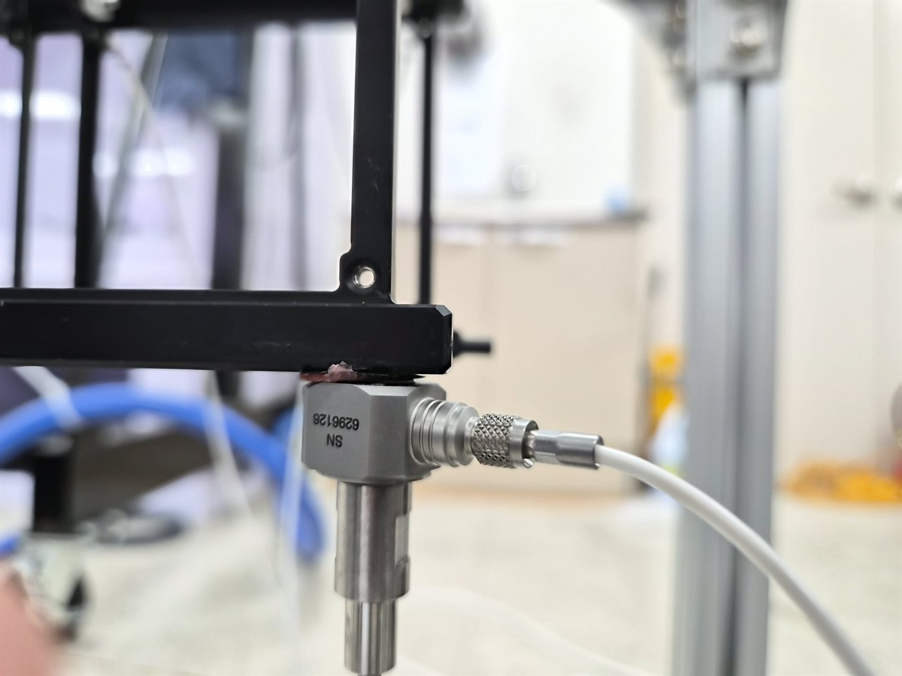
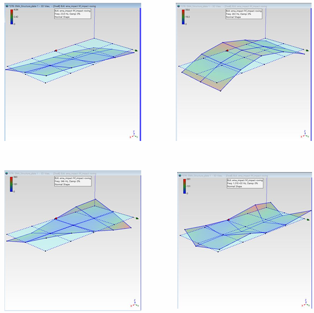
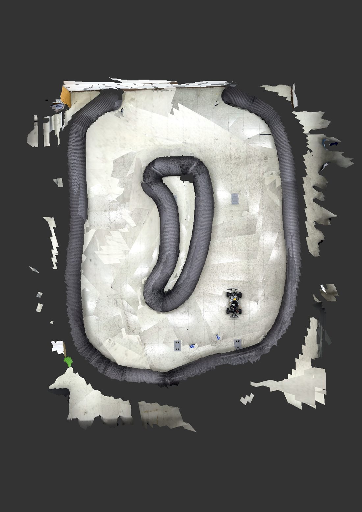

Embedded & Control
MCU 기반 센서 인터페이스와 저수준 통신, 실시간 모터·자세 제어기를 구현합니다.
- C/C++ · STM32/MCU · Raspberry Pi
- UART · I2C · SSI · GPIO
- Cascade · Feedforward · Filtering
01 / ABOUT
센서 신호가 제어 명령이 되고 실제 구동으로 이어지는 전 과정을 이해합니다. 문제를 로그 한 줄이나 부품 하나로 단정하지 않고, 물리 계층부터 알고리즘까지 연결해 원인을 찾습니다.
MCU 기반 센서 인터페이스와 저수준 통신, 실시간 모터·자세 제어기를 구현합니다.
엣지 컴퓨팅 보드와 센서, 펌웨어를 연결해 실제 기체에서 동작하는 시스템을 만듭니다.
데이터를 계측하고 분석해 설계가 실제 환경에서도 신뢰할 수 있는지 검증합니다.
02 / SELECTED WORK
프로젝트에서 어떤 문제를 맡았고, 어떻게 실제 시스템으로 완성했는지를 중심으로 정리했습니다.
전장 · 펌웨어 · 제어
전원·회로부와 방수 배선을 설계하고 Raspberry Pi–Teensy 통신, GPIO 기반 SSI, 침수 센서를 통합했습니다. 엔코더 피드백 기반 Feedforward Cascade 제어와 중앙값 필터를 적용해 수중 구동 안정성을 확보했습니다.
VIO · 디버깅 · 비행 검증
시각 정보 손실 시 VIO의 궤적 오차가 누적되는 문제를 해결하기 위해 VINS-Fusion 기반의 경량 모듈형 실패 감지, 대응 프레임워크를 설계하고 구현했습니다. 특징점 추적 개수로 실패를 실시간 감지하고 ROS 토픽으로 상태를 전달했습니다. 7초 암전 조건에서 RC카의 ATE RMSE를 0.9121m에서 0.1346m로 85.2%, 드론 시뮬레이션에서는 0.8613m에서 0.3024m로 64.9% 낮췄습니다. 개념 검증을 위해 외부 추정치로 참값을 사용했습니다.
연구 과정 자세히 보기 ↗
DAQ · 신호처리 · 알고리즘
가진기와 8채널 가속도계로 구조 응답을 계측하고 FRF를 확보했습니다. 상용 분석 소프트웨어의 라이선스가 유실된 상황에서 관련 논문과 업체 교육을 바탕으로 MATLAB 분석 환경을 구축했으며, Peak Picking과 LSCE로 고유진동수와 감쇠비를 구하고 모드 형상을 시각화했습니다.
분석 과정 자세히 보기 ↗

통합 환경 · 유도 제어 · 성능 개선
5인 팀에서 DAVE, ROS 2, Gazebo 기반 공통 환경과 위협 어뢰 제어를 담당했습니다. PP와 PNG 유도 로직을 구현하고 센서 발행 경로를 개선해 최대 발행 간격을 330ms에서 12ms로, CPU 사용률을 102.7%에서 2.4%로 낮췄으며 RTF는 0.62에서 1.00으로 높였습니다. 실행 과정을 5단계 명령으로 표준화하고 문서화해 팀원의 통합과 반복 시험을 지원했습니다. 최종 통합 환경에서 PP 회피 동작을 확인했고, PNG는 충돌이 다수 발생하는 한계까지 기록했습니다.

Hokuyo LiDAR 기반 OGM과 SLAM 환경을 구축하고, 고속 주행에서 스캔 매칭·루프 클로징을 튜닝했습니다. Jetson–VESC UART 및 ERPM 텔레메트리를 통합했습니다.
프로젝트 자세히 보기 ↗
마찰전기 나노발전기의 입력을 Arduino로 계수하고 RTC·SD에 기록한 뒤, Bluetooth로 App Inventor 앱에 전달해 기간별 교통량을 확인하는 시제품을 팀장으로 개발했습니다.
프로젝트 자세히 보기 ↗
03 / SKILLS
직접 구현하고 시험한 경험을 기준으로, 업무에 활용할 수 있는 기술을 정리했습니다.
STM32 주변장치 제어와 비트 단위 데이터 처리 경험이 있으며, 임계영역, volatile, mutex의 목적과 적용 조건을 이해하고 실제 프로젝트에서 mutex를 적용
로봇 제어 노드와 장비 인터페이스 구현, 기본적인 객체지향 설계와 Strategy, Factory 패턴 적용
센서와 제어 노드 구성, 토픽 기반 데이터 연동, ROS-Gazebo Bridge와 다중 플랫폼 통합 환경 구축
약 2년간 CLI 중심 개발 환경을 사용하며 패키지, 권한, 그래픽 관련 오류를 분석하고 셸 스크립트로 반복 작업 자동화
ROS 기반 센서 연동과 SLAM, VIO 구동을 위해 Jetson 계열 보드에 개발 환경을 구성하고 실제 플랫폼에 적용
베어메탈 제어와 RTOS 실습, 주변장치 및 통신 연동에 여러 MCU, FPGA 기반 보드를 직접 사용
실험 데이터 가공과 3차원 좌표 변환, 궤적과 오차 시각화, FRF와 모달 데이터 분석 및 시험용 GUI 제작
Gazebo SDF 모델 수정과 플러그인, ROS Bridge를 적용했으며 AirSim과 ROS 연동 환경 구성 및 센서, 제어 설정에 성공
프로젝트에 필요한 구조물을 3D 모델링하고, 3D 프린터 출력과 CNC 카본 플레이트 가공용 설계로 실제 제작까지 연계
브랜치와 Pull Request 기반 협업, 일반 코드와 ROS 패키지 빌드 구성, 기초 Dockerfile 작성과 이미지 실행, 데이터 마운트
04 / CONTACT